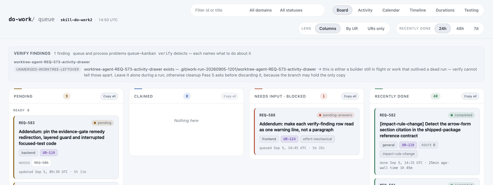

Proposal · Kanban board · Verify findings strip · REQ-588
2026-09-05 · one cause, three mockups, one captured request (REQ-588, waiting for your pick) · written before any implementation
This is a design proposal, not a completed-work report. Nothing here has shipped. The mockups are hand-built pages that copy the board's stylesheet and the strip's markup; the three findings and one skipped probe in them are the two findings from your screenshot plus one "cleanup can fix" finding and one skipped probe, added so every row weight the renderer has is visible.
Verdict
The strip is not broken by a bug. It looks broken because REQ-579 (verify findings as compact rows) put the detail sentence, an arrow and the remedy sentence into one inline span, so a row is a paragraph that wraps under the chip, and the subject heading, the chip and the text each got their own size. Three defects, one row rule.
All three mockups fix the same three things: the remedy gets its own line, the chip and the text become a two-column grid so wrapped text stays in its column, and subject, chip and text share one scale (subject in the board's mono face, since it is an identifier). They differ only in where the subject goes and whether the remedy is always shown. M1 is the recommendation: it is a CSS change plus dropping the arrow, and it keeps the list REQ-579 approved. M2 is the most scannable on a wide board but spends a column on the subject, which worktree names make wide. M3 is the smallest strip, at the cost of a click to read what to do.
One more change rides with all three (D4 in the request): today the producer's detail starts by repeating the subject ("worktree-agent-REQ-573-activity-drawer exists — .git/…") under a heading that already says the name. The mockups show the detail without that repeat.
The strip as shipped

Cause, in the shipped files
In web/board-cards.js, makeFindingRow appends detail, the fixable tag and "→ " + remedy as inline siblings of one .board-findings-text span. In web/board.css (board 0.236.20):
.board-findings-row {
display: flex; align-items: baseline; gap: 8px;
font-size: 0.82rem; line-height: 1.45;
}
.board-findings-subject { font-size: 0.72rem; font-weight: 600; }
.board-findings-chip { font-size: 0.72rem; text-transform: uppercase; }
.board-findings-remedy { margin-left: 6px; color: var(--ink-soft); }
Flex lets the text span wrap as one block beside the chip, so a long remedy makes a paragraph; the remedy differs from the detail only by colour; and the heading is a fourth size next to the header's 0.82rem title, the 0.72rem chip and the 0.82rem row.
Mockups · open each one
Each frame is a live page in the board's own stylesheet; open it full-size to see it at board width, or add ?theme=dark. Only the CSS block printed under each frame differs from the shipped stylesheet, plus the markup note. The top-right tag is a mockup label, not part of the proposal.
The shipped rows with the two findings from your screenshot, plus a fixable finding and a skipped probe. The remedy is the grey tail of the detail; the second line starts under the chip's text column with one word on it.
open full-size · light capture · dark capture
/* no change: shipped rules as printed above */
The subject heading and row order stay as REQ-579 approved. The row becomes a two-column grid; the remedy is a block under the detail with no arrow. Smallest change: CSS only, plus deleting the arrow string in the renderer.
open full-size · light capture · dark capture
.board-findings-row { display: grid; grid-template-columns: max-content minmax(0, 1fr);
column-gap: 10px; align-items: baseline; font-size: 0.8rem; }
.board-findings-text { display: block; }
.board-findings-remedy { display: block; margin: 1px 0 0; }
.board-findings-subject { font-family: var(--font-mono); font-size: 0.8rem;
font-weight: 600; letter-spacing: 0; color: var(--ink-base); }
.board-findings-chip { font-size: 0.66rem; padding: 1px 7px; line-height: 1.6; }
/* board-cards.js: remedy text without the "→ " prefix */
The whole list is one grid: subject, chip, text. The subject is a cell of its group's first row, so every chip and every detail start at the same two x-positions and a hairline separates groups. Most scannable; costs a small renderer change (subject moves into the row) and a column as wide as the longest subject.
open full-size · light capture · dark capture
.board-findings-rows { display: grid;
grid-template-columns: max-content max-content minmax(0, 1fr);
column-gap: 12px; row-gap: 4px; }
.board-findings-row { display: contents; font-size: 0.8rem; }
.board-findings-row-first > * { border-top: 1px solid var(--line-soft); padding-top: 6px; }
.board-findings-subject { margin: 0; font-family: var(--font-mono); font-size: 0.8rem;
font-weight: 600; color: var(--ink-base); }
.board-findings-chip { justify-self: start; font-size: 0.66rem; }
.board-findings-text, .board-findings-remedy { display: block; }
/* board-cards.js: subject rendered as the first cell of the group's first row,
an empty cell on the rows after it; no heading element */
Same grid and scale as M1, but the remedy sits in a closed toggle after the detail. The strip is as tall as the list of findings; the first row is shown open so both states are visible. Costs a click to read the remedy, and a small renderer change.
open full-size · light capture · dark capture
/* M1 rules, plus: */
.board-findings-more { display: inline; }
.board-findings-more summary { display: inline; cursor: pointer;
color: var(--accent-claimed); font-size: 0.76rem; list-style: none; }
.board-findings-remedy { display: block; margin: 1px 0 0; }
/* board-cards.js: remedy wrapped in <details><summary>what to do</summary>…</details> */
What each one costs
| Option | Files | Renderer change | Strip height, 3 findings + 1 probe at 1600 px | Trade |
|---|---|---|---|---|
| M1 | board.css, board-cards.js, behavior test | drop the arrow prefix | 7 text lines + 3 headings | keeps REQ-579's list exactly; longest strip of the three |
| M2 | board.css, board-cards.js, behavior test | subject becomes a row cell | 7 text lines, no headings | best alignment; subject column eats width when names are long |
| M3 | board.css, board-cards.js, behavior test | remedy inside a details toggle | 4 text lines + 3 headings | smallest; the remedy is hidden until clicked |
All three also change verify.go and its test so a subject-bearing finding's detail no longer starts with the subject (D4), and all three keep the board's version, parser lock-step and build outputs per the kanban prime.
Next step
REQ-588 (this addendum) is captured as pending-answers with one question, which layout ships. Answering it flips the REQ to pending and do-work run REQ-588 builds it. Bundle: ai-reports/2026-09-05_1445_REQ-588-verify-findings-row-mockups/.
Mockups and captures made 2026-09-05 14:45 to 14:55 UTC from board 0.236.20 with headless Chrome at 1600 px, light and dark. Report layout render-verified in both themes.